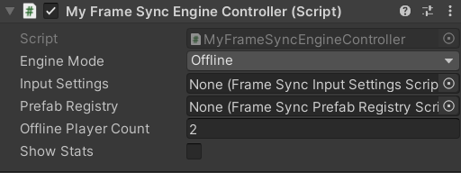
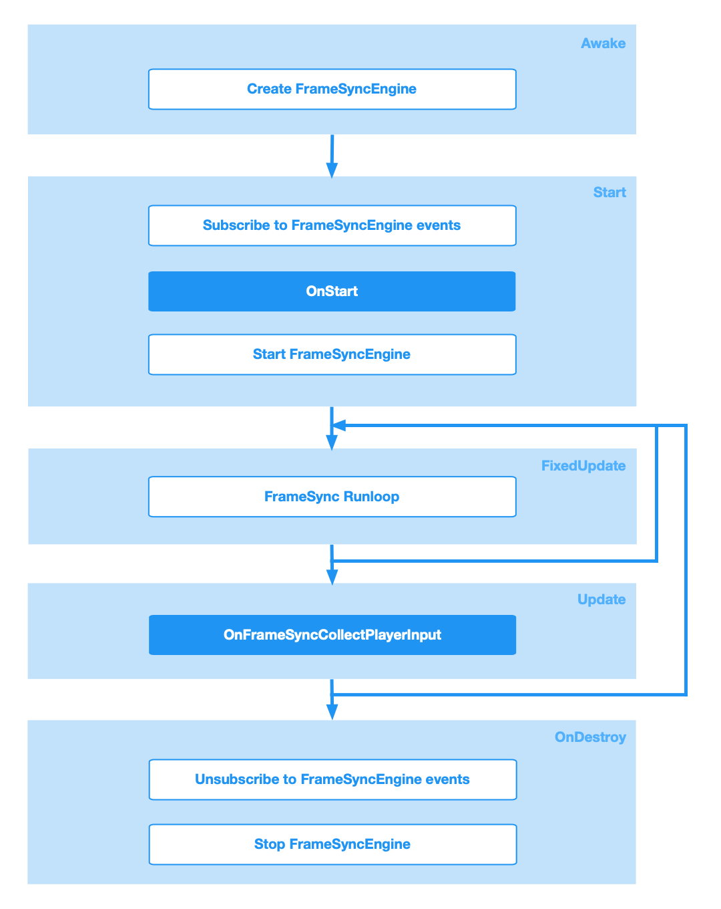

FrameSyncEngineController¶
Your code interacts with the FrameSyncEngine by implementing a class derives from the built-in class FrameSyncEngineController.

Properties¶
| Name | Function |
|---|---|
| Engine Mode | FrameSyncEngine mode, the options are: Offline, Online, and OnlineRollback. |
| Input Settings | The input settings ScriptableObject. |
| Prefab Registry | The Prefab Registry ScriptableObject. |
| Offline Player Count | The number of players in offline mode. |
| Show Stats | If enabled, FrameDelay, InputDelay and Frame Buffered will be displayed at the top left corner. |
Interaction with Unity¶
The base FrameSyncEngineController is a subclass of MonoBehaviour and implements the Awake(), Start(), FixedUpdate(), Update(), OnDestroy(), and OnGUI() methods. Please see the chart below.

Info
Different FrameSyncEngine modes have different FrameSync runloop execution order.
Please check Offline Mode, Online Mode, Prediction/Rollback Mode for details.
Events¶
The FrameSyncEngineController provides a collection of useful events which allow you to customize the behaviour of the FrameSyncEngine for your game.
| Input Sample Events | |
|---|---|
| OnFrameSyncCollectPlayerInput | Called when the FrameSyncEngine samples the inputs of the local player. |
| Player Status Change Events | |
|---|---|
| OnFrameSyncNewPlayerConnected | Called when a player connects to the room. |
| OnFrameSyncPlayerReconnected | Called when a player reconnects to the room. |
| OnFrameSyncPlayerDisconnected | Called when a player disconnects. |
| Desync Detection Events | |
|---|---|
| OnFrameSyncDesyncDetected | Called when a simulation desync is detected. By default, the method returns false. |
| Simulation Events | |
|---|---|
| OnFrameSyncFinishedSimulationForCurrentFrame | Called after the StaticFrameSyncBehaviours and the DynamicFrameSyncBehaviours finished simulation for the current FrameSync step. |
| OnFrameSyncWillFinishCurrentFrame | Called before the current Frame finishes. |
| Custom Restorable Events | |
|---|---|
| OnFrameSyncCreateCustomRestorable | Called after the FrameSyncEngine exported the data from the StaticFrameSyncBehaviours and the DynamicFrameSyncBehaviours. |
| OnFrameSyncWillUseCustomRestorable | Called before the FrameSyncEngine uses a custom IFrameSyncSnapshot object for restoration. |
| OnFrameSyncImportCustomRestorable | Called when importing game states data from server. |
| Custom Hashcode Events | |
|---|---|
| OnFrameSyncGetCustomHashCode | Called when calculating a hash for the current simulation step. |
| Game State Restoration Events | |
|---|---|
| OnFrameSyncWillRestoreGameStates | Called when the client connects to a game and needs to restore the game states |
| OnFrameSyncDidCreateGameObjectForRestoration | Called after the FrameSyncEngine creates a GameObject for restoration. |
| OnFrameSyncWillDestroyGameObjectForRestoration | Called before the FrameSyncEngine destroys a GameObject for restoration. |
| FrameSyncGame Events | |
|---|---|
| OnFrameSyncGameStateChanged | Called when the FrameSyncGame state changes. |
| OnFrameSyncGameInitialize | Called before the FrameSyncGame starts. |